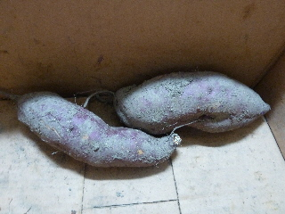
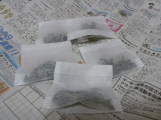

遊びで植物を育てよう
2015/08/30
さつまいもを掘りました。
8月ですが、もう十分な大きさになっていました。

美味しそうです。
【ページTOP】
【8月TOP】
【園芸TOP】
2015/08/10
お風呂用のドライミントを作りました。
生のミントを使えばいいじゃん。って思っていましたが、お風呂に入るたびに冷蔵庫から取り出すのが面倒なんですよね。

ドライならお風呂場の近くに置いておけるので、さっと取って使えて便利です。
使わなくても日持ちするので、慌てて使わなくていいので安心です。
冷蔵庫の中で枯れるのを思うと、こっちの方がいいかな？って思って作りました。
【ページTOP】
【8月TOP】
【園芸TOP】
2015/08/02
夏の作業に便利なものを見つけました。
虫よけスプレーをドラッグストアで探していたら、いいものがありました。

服の上からサラテクト クールミストです。
虫よけスプレーですけど、プラス清涼感があったり、洋服に付けてもいいので使いやすそうです。
これだったら首や耳にスプレーする時に、服につかないかを心配しなくてもいいです。
実際付けた感じは、ちょっと刺激が強いかな？しっかり清涼感がありました。
（私は少し肌が弱いです。でもかぶれなくて良かった。）
熱い夏に、風が吹いた時の清涼感はたまらなく気持ちいですね。
これから畑仕事の時はガンガン使おうと思います。
あと、レジャーでも使います。
【ページTOP】
【8月TOP】
【園芸TOP】
過去の日記
【2024年8月の日記】
【2023年8月の日記】
【2022年8月の日記】
【2021年8月の日記】
【2020年8月の日記】
【2019年8月の日記】
【2018年8月の日記】
【2017年8月の日記】
【2016年8月の日記】
【2015年8月の日記】
【2014年8月の日記】
【2013年8月の日記】
【2012年8月の日記】
【ページTOP】
【8月TOP】
【園芸TOP】
畑仕事じゃないよ。
【おいしいものを食べよう。】【たくさん寝よう。】
【ソロ活をしよう!】【季節感のあることをしよう。】【動画視聴はほどほどに。】【当サイトの全てのコンテンツは無断転載禁止です。】